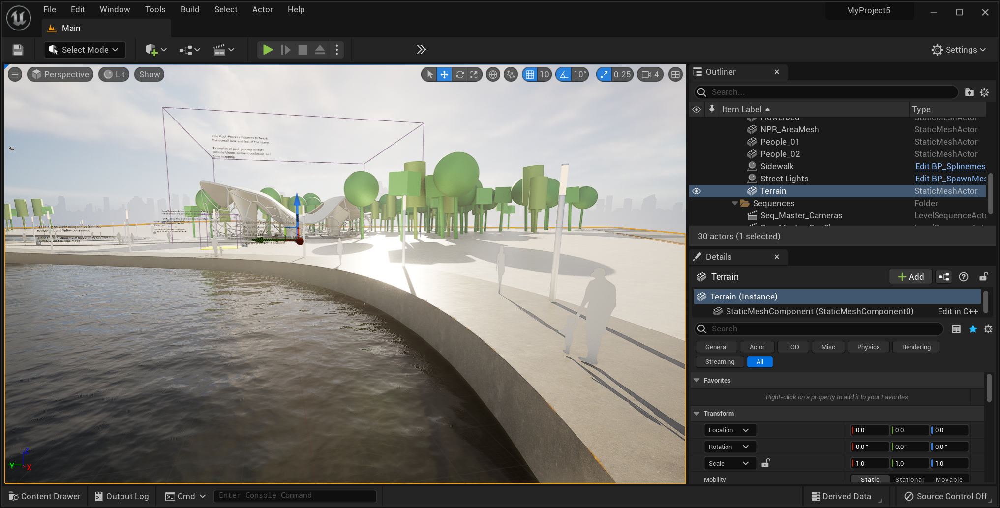

Développement de jeux vidéo
Le développement de jeux vidéo est le processus de conception, de programmation et de test d'un jeu vidéo. L'effort est entrepris par un développeur, allant d'une seule personne à une équipe internationale dispersée à travers le monde. Le développement des jeux commerciaux traditionnels pour PC ou consoles est habituellement financé par un éditeur et peut prendre plusieurs années.
Les jeux vidéo indépendants prennent généralement moins de temps et d'argent et peuvent être produits par des particuliers et de petits développeurs. L'industrie des jeux indépendants est en plein essor, facilitée par des logiciels de moteurs de jeu accessibles tels que les logiciels Unity et Unreal Engine1 et de nouveaux systèmes de distribution en ligne tels que Steam et Uplay, ainsi que par le marché des jeux mobiles pour les appareils Android et iOS.
Les premiers jeux vidéo, développés dans les années 1960, n'étaient généralement pas commercialisés. Ils nécessitaient des ordinateurs centraux pour fonctionner et n'étaient pas accessibles au grand public. Le développement de jeux commerciaux a commencé dans les années 1970 avec l'arrivée des consoles de jeux vidéo de première génération et des premiers ordinateurs domestiques comme l'Apple I. À cette époque, en raison des faibles capacités des ordinateurs, un programmeur seul pouvait développer un jeu complet. Cependant, à la fin des années 1980 et 90, la puissance de traitement toujours croissante des ordinateurs et les attentes accrues des joueurs ont fait qu'il était difficile pour une seule personne de produire un jeu grand public. Le coût moyen de production d'un jeu vidéo AAA a lentement augmenté, passant de 1 à 4 millions de dollars US en 2000 à plus de 5 millions en 2006, puis à plus de 20 millions en 2010.
Les jeux commerciaux grand public pour PC et consoles sont généralement développés par phases : tout d'abord, lors de la préproduction, les sales pitches (en), les prototypes et les documents de conception du jeu sont rédigés ; si l'idée est approuvée et que le développeur reçoit un financement, le développement à grande échelle commence. Le développement d'un jeu complet implique généralement une équipe de 20 à 100 personnes assumant diverses responsabilités, notamment des concepteurs, des artistes, des programmeurs et des testeurs.